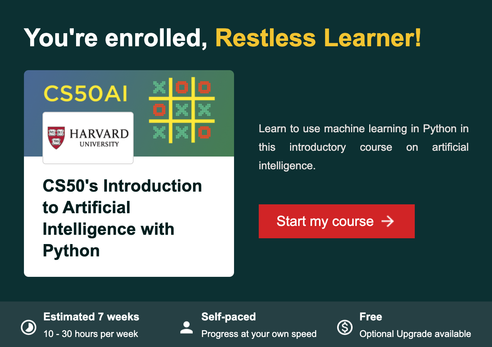
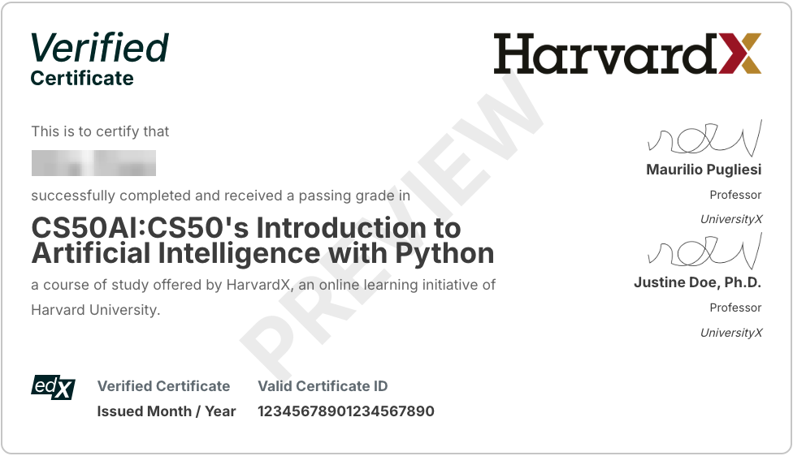

哈佛 CS50-AI 课程介绍：从零开始学习人工智能
哈佛大学的 CS50AI 是一门在线开放课程，专注于介绍人工智能的基础知识，并使用 Python 进行编程和项目实践。该课程由哈佛大学教授 David J. Malan 及其团队制作和授课，是广受欢迎的 CS50 计算机科学系列课程的一部分，适合已经具备一定编程基础的学习者。
课程简介
CS50AI 课程的全称是 CS50’s Introduction to Artificial Intelligence with Python，即 CS50 Python 人工智能入门。哈佛大学和在线课堂平台 edX 合作于2020年推出该课程，并在2024年进行了修订和更新。
CS50AI 课程引入现代人工智能的基础概念和算法，并讲解游戏引擎、手写识别和机器翻译等技术的产生思想。通过实践项目，学生可以接触到图搜索算法、分类、优化、机器学习、大型语言模型等人工智能主题背后的理论，并将其融入到自己的 Python 程序中。课程结束时，学生将获得机器学习库方面的经验以及人工智能原理方面的知识，从而为进一步深入学习人工智能和机器学习的高级技术做好准备。
课程网址
- edX 课程页面：在这里可以免费注册最新的 CS50AI 课程。注册后就能看到所有授课内容的相关链接，还有课程时间线和进度信息。
- CS50AI 官网：这是课程的实际主页。这里包含所有主题单元的授课音视频、讲义笔记和PPT、源代码、测验、编程项目及讨论群的社交网络链接等。
下图显示注册后收到的电子邮件包含的课程信息及开始链接：

课程信息
教学形式为在线自学（Self-Paced），没有固定时间限制，可以自由安排学习进度。按照推荐的每周10-30小时学习进度，可以七周完成。如果无法达到推荐的周学时也没有关系，只要在年底（12/31）前完成全部编程项目就算达成目标。
课程包含七个核心单元。教学材料包括视频讲解、代码示例、测验和总共12个 AI 实战项目。每个单元模块包含一个1～2小时的视频讲座、一个在线小测验和一两个编程实践任务。小测验是可选的，但非常有助于考察我们对基本概念的理解。编程项目将进一步强化学到的知识点和实际应用能力。
CS50AI 要求的先修知识：
- Python 基础：如果没有 Python 编程经验，可以先学习 CS50x 或 Python 入门课程。
- 数学基础：了解基本的线性代数、概率论和逻辑推理会更容易理解 AI 相关内容。
CS50AI 没有指定的官方教科书，但课程提供了一些相关的学习资源，其中最重要的是《人工智能：现代方法》（Artificial Intelligence： A Modern Approach）。此书的第 4 版是迄今为止最新和最全面的人工智能理论与实践介绍，在广度和深度上没有其它教材可以匹敌，强烈推荐。
Disclosure: This blog site is reader-supported. When you buy through the affiliate links below, as an Amazon Associate, I earn a tiny commission from qualifying purchases. Thank you.
认证证书
课程是完全免费的，学习无需付费。在成功完成所有12个项目并提交后，就可以得到一个结业证书。如下图所示，左边为项目进度记录，右边是完成后生成的结业证书。
如果希望获得哈佛/edX平台联合认证的证书（Harvard edX 认证，下图为样例），以助力职业发展，可以付费申请官方证书。认证费用现为 $299。网上还可以找到一些折扣码，省掉～20%的费用。

教学大纲
CS50AI 课程共分为七个核心单元，下面逐一做一些概要说明。
搜索（Search）
第一个单元模块介绍了帮助人工智能从起点找到目标的搜索算法。讲座涵盖了搜索问题的结构（包括状态、动作和目标）并探讨了不同的搜索策略，包括深度优先搜索（DFS）、广度优先搜索（BFS）、贪婪最佳优先搜索和 A* 搜索。这些算法通过迷宫求解等实际例子进行演示，讲座还涉及使用极小极大算法（Minimax）和 Alpha-beta 剪枝等对抗性搜索技术的游戏策略。
编程项目：
- Degrees（社交网络最短路径）: 利用图搜索算法（BFS）找出两位演员之间的最短合作关系路径（类似“六度分隔理论”），算法实现用到了先进先出 （FIFO） 队列。
- Tic-Tac-Toe（井字棋）: 应用包含 Alpha-beta 剪枝的 Minimax 算法，实现一个不可战胜的井字棋 AI。本项目需要安装 Python pygame 软件包。
知识推理（Knowledge）
这里探讨了人工智能中的知识表示和推理，重点关注如何以机器可用于逻辑推导的方式编码信息。它介绍了命题逻辑（使用符号和逻辑运算符如 NOT、AND 和 OR等）和一阶逻辑（增加了量词和关系）。讲座演示了如何使用推理规则（如肯定前件式和归结法）从现有事实中推导新知识。它涵盖了知识库、模型检验和自动定理证明，展示了人工智能系统如何通过将知识表示为逻辑语句并应用系统化推理来进行逻辑推断和解决如谜题游戏等问题。
编程项目：
- Knights（骑士/无赖）：给定一个能够解谜的逻辑推理系统，可以根据每个角色所说的一组陈述句子，推断角色是骑士还是无赖。任务是确定如何用命题逻辑来表示这些谜题，以便此系统运行模型检查算法为我们解开这些谜题。
- Minesweeper（扫雷）：基于知识的智能代理在做出决策时会考虑其知识库，并根据这些知识做出推断。任务是创建一个 AI 代理，收集并分析扫雷游戏中的棋盘信息和知识，从而推断出地雷的位置。本项目需要安装 Python pygame 软件包。
概率推理（Uncertainty）
第三讲讨论了人工智能系统如何处理不确定性，这在处理不完整信息或概率性结果时是一项关键能力。讲座介绍了概率论基础和贝叶斯网络（Bayesian Networks），用于表示变量之间的关系。它涵盖了条件概率、随机变量、独立性和联合概率分布。讲座解释了通过枚举、抽样和似然权重进行推理，以计算复杂场景中的概率。它还探讨了用于事件序列的马尔可夫模型和用于从可观察数据推断隐藏状态的隐马尔可夫模型（HMM），展示了概率推理如何使人工智能能够在不确定条件下做出明智决策。
编程项目：
- PageRank（网页排名）：实现谷歌 PageRank 算法，计算网页的重要性。具体应用两种 PageRank 计算方法 - 1. 通过从马尔可夫链随机冲浪者网页中抽样；2. 通过迭代使用 PageRank 公式。
- Heredity（遗传概率推断）：任务是利用贝叶斯网络模拟的基因遗传模型对人群进行推断。通过给定信息，AI 将能够判断出每个人的基因概率分布，以及测试中性状表现的概率分布。
优化（Optimization）
此单元模块专注于寻找复杂问题最佳解决方案的优化技术。它介绍了局部搜索算法，如爬山法和模拟退火（Simulated Annealing），这些算法通过探索相邻状态来迭代改进解决方案。讲座涵盖了优化挑战，如陷入局部极值，并探讨了克服这些限制的技术。它讨论了线性规划和约束满足问题（CSP），其中 CSP 解决方案必须满足特定约束。讲座演示了回溯搜索、弧一致性（Arc Consistency）和 AC-3 算法等算法，并将这些概念应用于日程安排、地图着色和数独谜题等问题，展示了优化算法如何在穷举搜索不切实际的大型搜索空间中高效找到解决方案。
编程项目：
- Crossword（填字）：将填字游戏建模为一个CSP，每个方格序列都是一个变量，要求完成一个求解器 - 从给定的词汇表中为每个变量选择一个不同的词，满足所有的一元和二元约束条件。解决方案的编程要实现回溯搜索和 AC-3 算法。本项目需要安装 Python pillow 软件包。
机器学习（Learning）
第五讲介绍了机器学习基础，重点关注监督学习技术，即计算机从带标签的训练数据中学习模式。讲座涵盖了几种分类算法，包括最近邻分类、k-最近邻、感知器学习和支持向量机，每种算法都有自己的决策边界创建方法。它解释了用于预测连续值的回归分析，并讨论了量化预测误差的损失函数。讲座还讨论了过拟合和正则化等重要概念，展示了如何平衡模型复杂性与泛化能力。此外，讲座引入强化学习，即代理通过奖励反馈学习最佳行为，探讨了马尔可夫决策过程和Q-学习算法。最后，它通过k-均值等聚类技术触及无监督学习，这些算法能在无标签数据中识别模式。
编程项目：
- Shopping（电子商务购物预测）：任务是建立一个近邻分类器帮助网站根据用户的相关信息确定其购买意图。 项目提供了某个购物网站大约 12,000 个用户的访问数据，以训练分类器。
- Nim（尼姆游戏）： Nim 是一种两个人玩的回合制数学战略游戏。项目要求完成一个 AI，应用强化学习的Q-学习算法，反复与自己对弈，最终找到游戏的制胜策略。
神经网络（Neural Networks）
第六个单元探讨了神经网络，这是一种受人脑生物结构启发的计算模型。讲座解释了人工神经网络如何通过互连单元处理信息，这些单元将输入与加权连接和激活函数（如阶跃函数、S型函数和ReLU）结合起来。它涵盖了用于简单线性决策的感知器模型和用于处理复杂非线性问题的多层神经网络。讲座介绍了反向传播算法作为训练这些网络的方法，通过计算误差和更新权重。还讨论了梯度下降优化技术、防止过拟合的方法（如 dropout）以及 TensorFlow 等实现框架。特别关注了用于计算机视觉的卷积神经网络，解释了使图像处理成为可能的技术，如卷积、池化和扁平化。最后，讲座介绍了循环神经网络，作为处理语言翻译和图像描述等顺序数据处理任务的解决方案。
编程项目：
- Traffic（交通标志识别）：使用 TensorFlow 构建一个神经网络，根据路标图像对路标进行分类。项目使用德国交通标志识别基准 (GTSRB) 数据集，其中包含 43 种不同道路标志的数千张图像。
自然语言处理（Language）
第七个单元模块考察自然语言处理以及人工智能如何理解和生成人类语言。讲座首先介绍了各种自然语言处理任务，如自动摘要、翻译和语音识别，然后深入探讨了语言理解中语法和语义的挑战。它涵盖了上下文无关文法和语法树来表示句子结构，并探索了 n-gram 作为捕捉语言模式的词序列。讲座研究了将文本分解为有意义单位的标记化方法，并讨论了用于文本生成的马尔可夫模型。对于文本分类，讲座解释了词袋模型和朴素贝叶斯分类器，展示了人工智能如何在不理解语法的情况下分析情感。讲座解释了词表示技术，包括分布式表示和word2vec，展示了人工智能如何捕捉词语之间的语义关系。最后，介绍了用于语言任务的神经网络架构，包括具有注意力机制的循环神经网络和transformer模型，这些模型通过实现语言数据的并行处理，彻底革新了自然语言处理领域。
编程项目：
- Parser（句法解析器）：任务是编写一个 AI 来解析句子并提取名词短语，需要使用无上下文语法形式来解析英语句子，以确定其结构。本项目需要安装 Python 自然语言工具包 ntlk。
- Attention（注意力机制）：项目有两个任务 - 1. 使用人工智能软件公司 Hugging Face 开发的 transformers Python 库，编写一个使用 BERT 预测遮蔽词的程序。该程序还将生成可视化注意力分数图表，144 个注意力头各生成一个图表；2. 分析程序生成的图表，试图了解 BERT 的注意力头在试图理解我们的自然语言时可能会注意什么。
经验体会
本博主于2024年度完成了这一在线课程。总的来说，CS50AI 作为人工智能的入门课程非常出色，其课程安排结构清晰、涵盖内容全面，在理论理解和实践实现之间取得了很好的平衡。它采用的项目驱动式学习（Project-Based Learning）是一大亮点，通过 12 个 Python 编程项目巩固理论知识并进行实战应用。CS50AI 特别适合
- 想要专攻人工智能的计算机科学学生
- 希望将人工智能纳入技能组合的在职软件开发人员
- 任何寻求系统化方式学习人工智能基础的人
具体在课程准备、学习进度、时间安排和项目完成上，下面总结一些个人经验和体会：
课程准备
对完全没有编程经验的人来说，CS50AI 的学习节奏可能具有挑战性。因此，建议一定要先快速入门 Python，达到可以舒适地阅读与理解简单的程序代码、编写 Python 简短应用函数的水平。 本课程的数学基础要求其实不高，但如果你已经忘记了大学一二年级所学的高等数学和工程数学的基本知识，就需要补充学习。当然，回头去看大学的教科书是不实际的。许多 AI 的入门书籍，包括前面推荐的《人工智能：现代方法》，都提供了讲解数学基础的附录，非常值得复习。
还可以准备一些 Python 编程和相关数学知识的小抄（cheatsheet），打印放在手边随时查阅，非常方便。网上有许多现成的小抄以供下载，或者汇编组合自己觉得最重要的内容，生成定制小抄。
进度安排
对于 Python 编程经验丰富、数学基础好的在校学生，如果能够付出每周20+小时学习 CS50AI，在一个月内突击学完课程所有内容并做完全部项目应该问题不大。如果你是和博主一样的在职人员，无法全日制地学习，可以考虑安排周末的时间。如果能做到周末两天每天集中6-8个小时学习和做编程项目，那么一个月内完成两个单元是可行的进展方案。这样整个课程就可以在四个月内结束。
项目经验
工具程序
CS50AI 课程属于哈佛大学 CS50 在线课程系列的一部分。所用这些课程的编程项目共享一组CA50 工具程序：
- check50：用于检查项目代码的测试工具。学习者可以使用 check50 本地测试项目代码。如果测试未通过，可以查看记录调试排错。
- style50：一个命令行工具，用它来检查你的代码是否与PEP 8 - Python 代码风格指南一致。
- submit50：一个命令行工具，用于提交课程项目作业，可以多次提交以更新。
这些工具程序的运行示例如下（对于不同的项目，只需更换项目名称即可）：
1
2
3check50 ai50/projects/2024/x/degrees
style50 degrees.py
submit50 ai50/projects/2024/x/degrees当运行 check50 工具进行测试时发现错误，调试需要参考测试用例时，可以去 CS50AI 项目的测试代码仓库 查阅各个项目的实际测试用例。也可以在本机的
~/.local/share/check50/ai50/projects/目录下找到同样的测试文件，比如第一个项目Degrees的测试用例位于1
~/.local/share/check50/ai50/projects/degrees/__init__.py
项目编程
在开始项目编程前，建议先完整地阅读所提供的代码，对整个程序框架有一个完整的了解。一些项目可以直接参考讲座中的演示代码（可从课程网站下载）。
如果被某个项目的排错调试困住，可以求助各个社交网络的 CS50AI 讨论群（Discord、Slack 等）或者 CS50 AI 助手。如果实在无法厘清思路，不知从何处着手，可以参考一些项目完成后的代码仓库，比如本博主的 GitHub CS50AI代码仓库。即使是这样，最好在看懂别人的答案后自己整理好思路，然后闭卷重新实现一下。 ⚠️请不要直接复制代码，因为这样做使得项目实践乃至整个课程学习失去意义。
项目总结
最后给出 CS50AI 12 个项目的总结比较（备注栏给出编程实现时的一些提示，以供参考）：
项目名称 学习单元 技术领域和算法 难度 备注 Degrees 搜索 图搜索（BFS），FIFO 队列 ★★ 使用队列实现BFS，留意特殊情况 Tic-Tac-Toe 搜索 对抗性搜索，Minimax 和 Alpha-beta 剪枝 ★★ 从状态评估开始，递归实现 Minimax Knights 知识推理 命题逻辑，模型检查 ★★ 注意分解复杂语句 Minesweeper 知识推理 知识库，逻辑推理 ★★★ 使用递归，持续更新安全格子和地雷的集合 PageRank 概率推理 马尔可夫链，PageRank 公式迭代 ★★★ 实现给定的随机搜索和迭代公式 Heredity 概率推理 概率分布，贝叶斯网络 ★★★ 使用联合概率表，谨慎处理条件式 Crossword 优化 约束满足问题，回溯搜索和 AC-3 算法 ★★★★ 高效使用回溯，优化约束检查 Shopping 机器学习 监督学习技术，近邻分类器 ★★★ 注重特征选择和数据预处理 Nim 机器学习 强化学习（Q-学习） ★★★ 从基础Q-学习开始，实现探索策略 Traffic 神经网络 TensorFlow，计算机视觉（CNN） ★★★★ 从简单的 CNN 架构开始，逐步优化 Parser 自然语言处理 语法解析，规则处理 ★★★ 标记化细分和树构建 Attention 自然语言处理 注意力机制，Transformer，BERT ★★★★★ 首先关注 TF-IDF 和查询处理
📌 学习 CS50AI，让你的 AI 职业成长之旅从这里开始！🚀